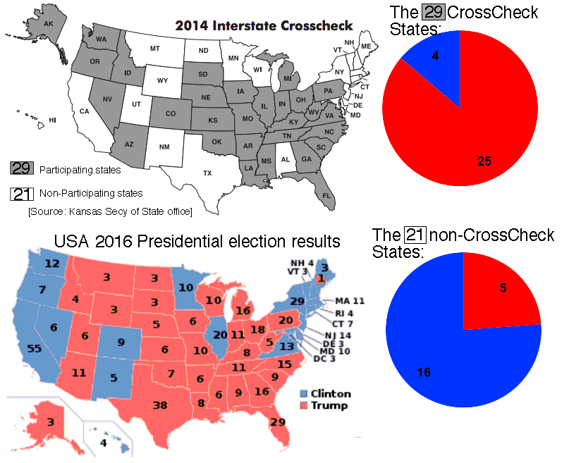

Greg Palast: The GOP's Stealth War on Voters, Rolling Stone Magazine 24 Aug 2016
is about a multiyear pre-election effort, spearheaded by Republican Kansas Secretary of State Kris Kobach, to "purge" voters from voter registration lists across the USA using "crosscheck" lists. These lists supposedly showed voters registered to vote in two different US states simultaneously. To stop the horrible threat of possible double voting, they had to be purged. (Of course, at least for non-adjacent states, this "threat" actually was negligible.) But the lists often intentionally omitted middle names, dates of birth, social security numbers, etc, making false matches far likelier. And these "matches" vastly over-represented Blacks and Asians, probably because, for historical reasons dating to the slave era, Blacks tended to have last names selected from a comparatively small set. (Such as "Jackson.")
Palast had earlier written about this in
Jim Crow Returns; millions of voters threatened by electoral purge, Al Jazeera America, 29 Oct. 2014.The Palast / Al Jazeera 2014 analysis of the match-lists found that an astonishing 1/7 of all African-Americans living in Crosscheck states were listed as double-registrants, as compared to 1/8 Hispanics, 1/8 Asian-Americans, and 1/11 whites.
But in the 2016 piece Palast instead claimed: 1 in 9 blacks, 1 in 6 Hispanics, and 1 in 7 Asian-Americans.
All three of these overrepresented groups were more anti-Trump than the average American, especially Blacks (who tend to vote 90% Democratic in the 2016-era USA). Specifically here are the estimated voting percentages, broken down by ethnicity,
| Ethnicity (US Pop.Fraction) | %Clinton | %Trump | Crosscheck 2014 Pop.Fraction |
|---|---|---|---|
| White(63.7%) | 37 | 57 | 57% |
| Black(12.2%) | 89 | 8 | 17% |
| Asian(4.7%) | 65 | 27 | 6% |
| Hispanic/Latino(16.3%) | 66 | 28 | 20% |
[Pop.Fractions from 2010 US census. Clinton & Trump vote percentages from 2016 CNN exit polls. CrossCheck pop. fractions are approximate and deduced from Palast's Al Jazeera 2014 piece and census data, since he did not actually state these numbers directly.]
In the 2016 election, USA-wide Clinton got 48% and Trump 46% of the votes. But in the CrossCheck double-registration lists, we would expect based on the above racial composition that those listed instead voted 53% Clinton and 41% Trump. In other words, for each voter prevented from voting due to CrossCheck purging (if the purged subset were uniform random) we would expect Trump gained 1/10 of a vote extra margin versus Clinton. And actually Palast 2016 claimed Blacks were more likely than uniform to be purged, in which case raise that to perhaps 1/6 of a vote.
On his webpage on 11 November 2016, Palast upped the ante by claiming The Election was Stolen – Here's How.
Palast described Kobach as a "Trump operative" – I do not know if that is correct, but it is known that Kobach and Trump met several times and that Kobach's name was floated as a member of Trump's list of candidates for USA attorney general.
Palast claimed 1.1 million as the total number of crosscheck-listed people purged from voter registration lists across the USA in participating states prior to the 2016 election day, out of 7.2 million listed by crosscheck lists as potential suspects. Multiplying 1/6, 1.1/7.2, and assuming 55% turnout, we find that for each name listed on a CrossCheck list, we expect 1.4% of a vote advantage accrued to Trump, i.e. 0.014×7.2 million = 101K extra vote margin for Trump nationwide.
Was CrossCheck all an above-board, unbiased, and nonpartisan, honest voter-purging effort? Bravely stopping vote-fraudsters in their tracks? I doubt it. The whole CrossCheck effort with 7.2 million alleged double-registrants apparently yielded only four people actually charged with deliberate double registration or double voting. Not exactly a huge threat squelched. And there seemed to be a remarkable correlation between participation in CrossCheck, versus Trump winning that state, see picture.
But did this all, as Palast claimed shortly after the 2016 election, constitute "stealing" the election? Well, no. It looks as though it tried, but if so it didn't succeed.
First of all, 101K extra vote-margin for Trump (meaning Clinton did not deserve to beat Trump by the official 2.9 million popular vote margin but really deserved 3.0 million), spread across the 29 CrossCheck states, simply was not big enough.
I.e. Palast's very own numbers, plus simple arithmetic I have outlined but which he never did, actually tells us that it is impossible that CrossCheck "stole the election" in any state beside Michigan. (And even if Michigan was stolen, that was not enough.)
According to Palast there were 499092 Michiganers on the CrossCheck suspect list. If ≥110K of them actually were purged, that would have been enough to yield Michigan's official Trump-Clinton 11K vote margin. But in fact, Palast himself estimated only 55K of them were purged.
And I find that even summing the "spoiler" effects of Johnson & Stein and the CrossCheck effect, still was not enough to swing the election enough to stop Trump winning.
So Palast is wrong: the election was not stolen – or if it was, it was not via CrossCheck alone; other methods considerably larger in their effects than CrossCheck would have been needed.